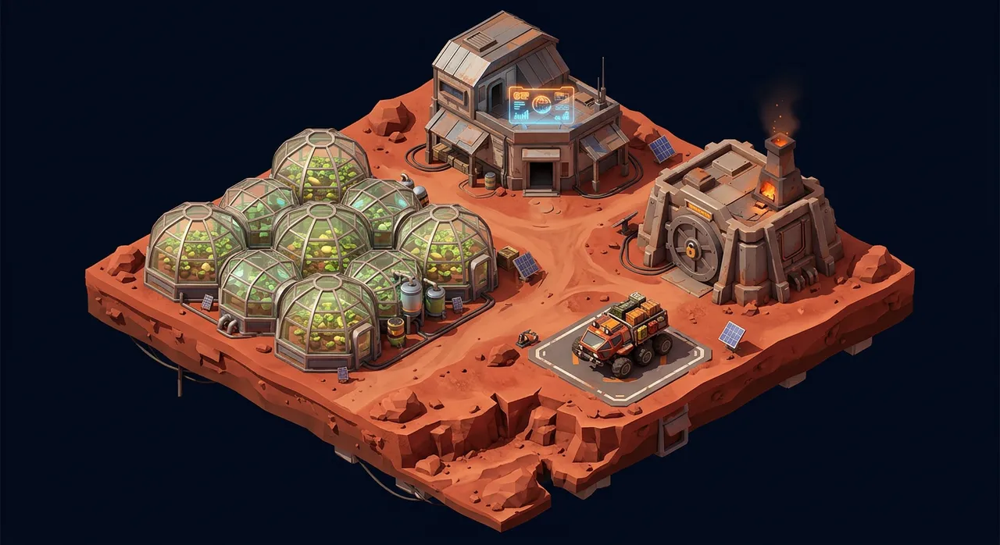

БЕТА · DEVNET01 / COLONYКОЛОНИЯ · ЭКОНОМИЧЕСКАЯ СИМУЛЯЦИЯ
ARES-1
Строй марсианскую колонию: развивай гидропонные модули, выращивай урожай и изучай, как устроена игровая экономика.
МОДУЛЬ→РОСТ→СБОР
Открыть бету Тестовая сеть Solana Devnet. Тестовые токены не имеют денежной ценности.